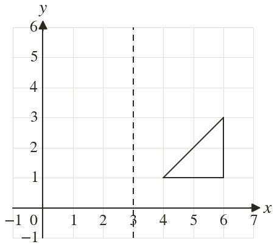
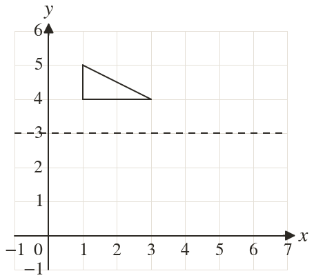
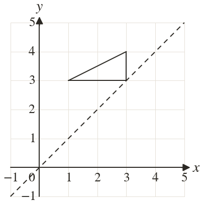
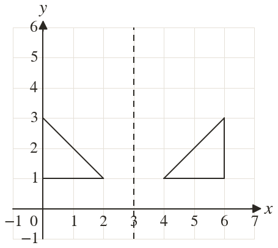
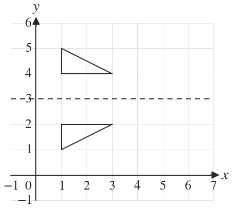
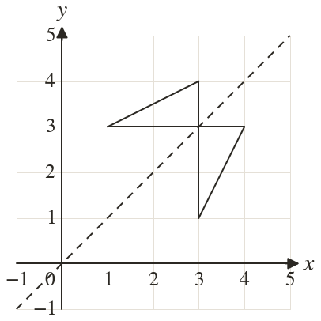

Westonbirt Maths · Transformations
Translations and Reflections
Name: ______________________ Date: ____________
1
Reflect the triangle in the line
2
Reflect the triangle in the line
3
Reflect the triangle in the line
4
Reflect the point in the line
5
Which of these points do not move when reflected in ?
Ext
Reflect in the line then reflect the image in the line





